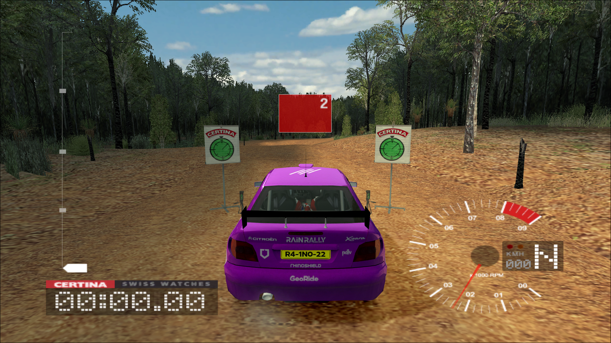

: rain
:: histoire
J'ai créé RAIN en 2019, à l'époque sa me appeler STORM, et le but de du pseudo marque était juste de proposer des livrées Gran Turismo Sport assez cool avec des logos etc. En 2020 pendant le confinement j'ai renommé STORM en RAIN parce que je voulais tout refaire donc nouveau logo, nouveau départ ! 2021, je crée le SPB (SuperPlaybot) un bot discord en python ce qui m'a remotivé à produire du contenu pour RAIN ! Mais j’ai été contrain de le stopper car discord py devait être arrêté. Maintenant RAIN propose encore des livrets mais pour GT7 mais aussi des mots comme une livrée spéciale pour la Citroën Xsara dans le jeu Colin Mcrae Rallye 3 !
:: produit
